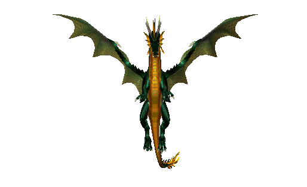

The Dragon
 The sound of something in the distance broke into this thoughts. “What is that?” He sat his basket down and began to walk toward the noise. Angus could see what looked like a hole in the ground about 40 feet away. It sounded like an animal was trapped inside. “Ainslies’ must be settin’ traps on our land agin! Uncle wull be gey crabbit when he hears!” The Turnebull and Ainslies clans had been feuding for centuries. If they indeed had set a game trap on Turnebull land, there would likely be a bloody fight. Angus decided that he should help the poor animal get free, but as he moved closer he could see that, whatever game this was, it was large and was growling. “Eh...mibbie ah shuid tell th' ithers.” Angus started to walk away, but stopped halfway back to the berry bushes. “No...I’m a Turnebull. I must be brave”, he thought. Taking a deep breath Angus turned back around and walked toward the pit. “A'm gonna help ye”, he said weakly. “Dinnae eat me, ok?” Upon hearing his voice, the animal stopped struggling. Angus peered into the pit and gasped. Crying out he stumbled backwards landing on his arse. The trapped animal let out a roar; shooting 30 foot flames out of the pit. Angus scrambled back to the wooded area where he was picking berries. His heart racing, he reclined against a tree to catch his breath. He had heard stories of dragons, but he had never seen one. King James V had ordered their extinction over a century ago. His great-great grandfather, Uilleam Turnebull, was said to have slayed the last. The dragon began to whimper like an injured dog. Gathering his courage again, Angus crawled back to the pit, laying as low as he could. “A must be a galoot”, he mumbled. Ever so quietly, he peeked into the hole. He could see that the pit was narrow which caused the beast’s wings to fold upward. Because of this, the dragon could barely move. “How am I s’posed tae help a dragon?”, Angus wondered. “I coud brin back a shovel and make the hole bigger, but whit will the dragon dae tae me once it is free? It looks hungry.” Suddenly an idea hit him. “It DOES look hungry! How aboot a nice side o lamb stuffed wi crushed poppy? That oucht tae calm ye down”, he thought excitedly. Angus started to push himself back away from the edge of the pit. In doing so, he accidentally pushed a tiny pebble into the hole hitting the dragon on the head. “Oop!”, Angus slapped a hand over his mouth as the dragon looked his way. Jumping up from where he was laying, Angus took off running toward the woods as fast as his legs could carry him. He swooped up his basket of berries and headed back to the castle.